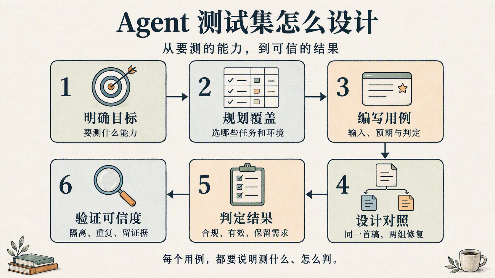

如何设计 Agent 评测集：以 shadcn/ui lint 为例
最近我在研究如何设计 Agent 评测集，刚好看到 shadcn/ui 开源的 lint 仓库也配套了评测集，在本地分别用 traex 和 dsh 可以对这套评测进行复现，于是结合源码做了一次拆解：任务怎么选、实验怎么做，以及结果能说明什么。官方评测说明
它有 16 道主要任务，公开测试涉及 3 个模型。每批 8 道样式题的生成加修复花费 1.67–8.44 美元。对照中，诊断组均 8/8 通过检查，修复费用比自查低约 10%–48%；另行外观评测的可评分样本多数为 9–10 分。评测记录

图 1｜Agent 评测集设计框架：从明确目标，到验证结果是否可信。

1. 明确目标：要测什么能力
设计评测前，先明确想验证什么。这里要验证的是：相比只给规则、让 Agent 自己找错，指出具体错误能否帮助它更好地修复代码？修复后，用户要求的外观是否还保留着？
| 目标 | 需要什么证据 | 容易误判的情况 | 具体案例 |
|---|---|---|---|
| 修改后符合既定规范 | 代码通过同一套规则检查，输出文件有效 | 报错数下降，但文件损坏或被删除 | 品牌色按钮示例：className="bg-[#FF6B35] text-white hover:bg-[#FF6B35]/90"改为 variant="brand"，同时在主题和组件中补齐定义。修复示例 |
| 所需效果得到保留 | 检查外观与内容；有交互要求时另测行为 | 仅凭零报错或新增样式选项，就认定需求完成 | 粉色按钮任务（实现示意）：<Button className="bg-pink-500 rounded-full">Delete account</Button>→ <Button variant="pink">Delete account</Button>。按钮仍须呈现粉色、胶囊形。任务 |
| 具体报错带来了额外帮助 | 比较有无具体报错时的结果，两组使用相同首稿、规则说明和修复上限 | 只比较首次生成与反馈后的结果，把全部改善归因于报错 | Haiku 对照案例：字号类 text-stats-label 引用的变量声明在错误位置。只给规则，3 轮未修好；给出具体报错，1 轮修好。对照记录 |
2. 规划覆盖：把任务目的、视觉要求和初始环境分开
规划评测覆盖范围时，需要分别考虑三个维度：任务目的，即想验证什么能力或发现什么问题；视觉要求，即用户对外观提出了哪些约束；初始环境，即 Agent 开始时有哪些组件、样式和项目配置可以使用。

图 2｜从任务目的、视觉要求和初始环境三个维度，规划评测要覆盖的场景。
2.1 任务目的：每类测试要验证什么
前三类观察 Agent 怎样实现需求，第四类检查评测程序会不会把失败算作成功。
| 测试目的 | 要验证的问题 | 具体案例 |
|---|---|---|
| 已有能力复用 | 组件已有合适样式时，Agent 能否直接复用？ | 删除账户任务，可直接使用已有选项（示意）：<Button variant="destructive">Delete account</Button>。任务、已有选项 |
| 定制与修复 | 面对新的视觉要求，Agent 能否按规范实现，并根据反馈修复违规？ | 粉色按钮任务，若直接写成（示意）：<Button className="bg-pink-500 rounded-full">Delete account</Button>，就违反了调用处不能修改组件外观的规则。任务 |
| 自然组装任务 | 没有样式定制要求时，Agent 是否仍会自行修改组件外观？ | 设置页任务没有圆角要求；若保存按钮写成（示意）：<Button className="rounded-full">Save</Button>，就额外修改了组件外观。任务 |
| 反作弊与无效交付 | 绕过规则、缺文件或坏代码，是否会被误判为通过？ | 无效交付测试：export function Page() { return <Nonexistent /> }引用了不存在的组件，应报 harness/unresolved-component。测试源码 |
temptation 和 neutral 各有 8 题，覆盖前三类目的；反作弊与无效交付由绕过检查的专项验证和运行期有效性检查承担。定制任务、组装任务、反作弊验证、有效性检查
2.2 视觉要求：用户说得不同，验收标准也不同
| 视觉要求 | 验收时要明确什么 | 具体案例 |
|---|---|---|
| 颜色与形状 | 要保留哪些可识别的外观特征 | pink-button：按钮必须是粉色、胶囊形。任务 |
| 精确数值 | 数值必须一致，还是允许近似 | exact-mock：13px 内边距、13px 字号、10px 圆角。任务 |
| 模糊审美 | 怎样判断“更突出”，评分依据是什么 | card-pop：让定价卡片比其他套餐更突出，没有指定颜色和尺寸。任务 |
| 不指定样式 | 是否复用已有外观，完成要求的内容和操作 | settings-page：要求表单、通知选项和保存按钮，没有要求改圆角或配色。任务 |
2.3 初始环境：组件数量和目录结构会影响什么
仓库提供了三种初始项目（fixture），它们的组件数量和目录结构不同，会影响 Agent 能复用哪些能力，以及检查器如何识别组件。
| 初始环境 | 它会影响什么 | 具体案例 |
|---|---|---|
| 最小项目 | Agent 能直接复用的能力较少 | fixture 只有 Button、Card、Badge；Button 有 destructive，没有 pink。初始项目、Button 定义 |
| 丰富组件 | 日常页面有更完整的组件可选 | fixture-rich 提供 11 个常见组件，用于设置页、登录页等组装任务。组件、实验记录 |
| 不同目录结构 | 检查器是否依赖固定目录和配置 | fixture-ds 把组件放在 ds/，通过 eval.json 指定识别方式。配置 |
已报告的组合包括 temptation + fixture、neutral + fixture-rich，以及 neutral 在 fixture-ds 上的目录适配检查；没有报告所有任务与环境组合都已运行。实验记录
3. 编写用例：从一条需求补齐输入、预期与判定

图 3｜粉色按钮的用例卡：输入、预期实现与验收标准。
3.1 先固定需求与起点
任务 pink-button 要求在账户设置页增加删除按钮，外观为粉色、胶囊形圆角，输出到 app/pink-button.tsx。初始 Button 没有粉色选项，主题也没有为这一用途提供对应颜色名称。原始任务、Button、主题
variant 是组件提供的样式选项；token 是主题中为颜色、尺寸等样式值定义的名称。
3.2 把可能的错误与规则对应起来
一种可能的实现（示意）：
<Button className='bg-pink-500 rounded-full'>Delete account</Button>
这段代码违反两条规则：no-restyle 不允许在调用处修改 Button 的颜色和形状；no-raw-colors 不允许直接使用 bg-pink-500 这类原始调色板颜色。前者要求把外观放回组件选项，后者要求在主题中定义颜色。规则说明、检查配置
布局类仍然允许使用，Card 等容器还允许调整间距。判断代码是否违规，要看具体组件和启用的规则。组件例外
3.3 描述可接受结果，不把某个字符串当成答案
一种修复方式是：在主题中定义粉色，在 Button 中增加包含颜色与胶囊形状的选项，再由页面选择它（示意）：
<Button variant='pink'>Delete account</Button>
只写 variant='pink' 不代表完成，名称也不必是 pink。建议按以下条件验收：
| 项目 | 粉色按钮的用例约定 |
|---|---|
| 输入 | 指定需求、固定 fixture、固定规则与可用工具 |
| 允许的实现 | 颜色进入主题，按钮外观由组件选项提供；名称可以不同 |
| 规范验收 | 调用处不再通过受禁外观类改 Button，新增颜色能被主题识别 |
| 交付验收 | 指定文件存在，组件导出与引用有效，能完成所需打包 |
| 需求验收 | 页面保留删除按钮，呈现粉色与胶囊形状；若要求真实操作，还须检查行为 |
| 失败示例 | 只写一个未实现的选项、删掉按钮、换成不符合要求的颜色，或通过绕过检查掩盖问题 |
3.4 任务要求、修复提示和评分标准要一致
exact-mock 要求严格匹配设计稿，包括 13px 内边距、13px 字号和 10px 圆角。但修复提示要求采用最接近的标准值，视觉评分也明确接受 13px 变为 12px。原始要求、修复提示、评分标准
因此，这道题得到高分，说明的是“按允许近似的标准保留了视觉效果”，并不说明精确复现了数值。出题时就应明确哪些值必须一致、哪些允许近似，让任务要求和验收标准使用同一套约定。
4. 设计对照：从同一份首稿比较两种反馈
首稿：首次生成的代码。
这套评测采用消融对照：让两组从同一份首稿出发，使用相同模型、规则说明和修复上限，其中一组额外获得具体报错。

图 4｜B/C 从同一份首稿出发，收到相同的规则摘要；C 额外获得具体报错。
| 条件 | 起点 | 交给 Agent 的信息 |
|---|---|---|
| A：生成首稿 | 初始 fixture 的新副本 | 任务、项目说明、现有组件 |
| B：规则自查 | A 生成后的代码副本 | 原任务、同一份规则说明、自查要求 |
| C：诊断修复 | 同一个 A 的代码副本 | 原任务、同一份规则说明、当前具体诊断 |
B/C 使用相同的模型接入方式，最多各修复三轮。每轮结束后，由评测程序检查代码；通过就停止，否则继续。如果 A 已经通过，两组都保留首稿，修复轮数为零。运行时需要加 --control 才会启用 B 组。运行流程
图中两条返回箭头传递的信息不同：C 收到剩余问题的文件、行号、规则名和消息；B 只收到同样的自查要求。两组每轮都是新的 Agent 调用，继续修改各自当前的代码，B 的提示里不包含隐藏检查结果。修复提示、诊断格式
B/C 比较具体报错的额外作用；A/C 比较整个修复流程的效果。A/C 同时增加了规则信息、诊断和修改机会，不能把全部改善归因于报错。B/C 也只是把诊断作为整体比较，没有单独测出行号、错误内容或修复建议各有多大帮助。
5. 判定结果：检查通过、修改分类、外观评分与修复费用
任务是否完成，要分别检查：代码是否符合规则、文件能否解析和构建、修改方式是否合理、用户需求是否保留。轮数、耗时和费用另行记录。

图 5｜四项质量要求：符合规则、交付有效、修复合理、保留需求；效率另行记录。
5.1 检查通过：规则与交付检查均无报错
报告中的 “green” 只表示最终问题列表为空：规则检查、文件与组件有效性检查、Agent 调用没有留下报错。修改标签和视觉评分单独记录，四项质量尚未合成一个共同的通过判定。通过判定
| 判断项 | 现有检查 | 仍不能证明什么 |
|---|---|---|
| 规则合规 | 检查应用与组件目录中的 TSX，按目录应用对应规则 | 所有写法都已覆盖，或规则本身一定合理。规则检查 |
| 交付有效 | 检查目标文件、组件导出与引用，并尝试打包；另记录 Agent 调用失败 | 完整类型检查通过、页面运行正常、交互正确。有效性检查、组件与打包 |
| 修复合理 | 为最终代码标注新增选项、组件修改、可疑绕过等类别，供审阅参考 | 修改一定合理，或一定由诊断促成。修改分类 |
| 需求保留 | 渲染 A/C 截图，结合原需求判断外观 | B 的外观质量、按钮点击与键盘操作、其他页面状态都符合要求。截图评分、渲染 |
5.2 修改分类：新增选项和可疑绕过都需核对代码
variant-added 表示最终代码相对初始项目新增了样式选项，但这个选项可能在 A 首稿里就有。判断诊断促成了什么修改，应比较 A 和 C 的代码。分类基准
标签还可能误判。规则测试允许下面这种 CSS 自定义属性写法：
<div style={{ "--gap": "8px" }} />
分类器却会因为匹配到 style={{ 而标记为 inline-style。因此，这个标签只能作为审阅线索，不能直接当作绕过规则的证据。合法用例、标签判断
5.3 截图评分：比较 A/C 外观，不验证交互
视觉评测根据原需求和 A/C 前后截图，判断修复后是否保留了任务要求的主要外观。默认对同一对截图判断三次，对有效评分取中位数；“是否保留意图”按严格多数票判定。两边都为空白时，记为无法判断。评分实现
它能检查粉色和胶囊形状是否保留，但无法验证点击按钮后是否完成操作。评分还允许标准值近似，因此高分也不表示像素完全一致。
如果要回答“具体报错是否让完整交付质量更好”，还需要对 B/C 做相同的外观与行为验收。现有 A/C 截图只能评价整个修复流程前后的外观变化。
5.4 实验统计：检查通过数、视觉评分、修复轮数与费用
这组历史对照使用 temptation + fixture，三个模型各运行一批 8 题。平均轮数只统计需要修复的题，费用只含修复阶段。实验记录
| 模型 | 检查通过数（B→C） | 平均修复轮数（B→C） | 修复费用（B→C） |
|---|---|---|---|
| Sonnet 5 | 8/8 → 8/8 | 1.25 → 1.00 | $3.57 → $2.47 |
| Haiku 4.5 | 7/8 → 8/8 | 1.57 → 1.00 | $1.41 → $0.74 |
| Opus 5 | 8/8 → 8/8 | 1.00 → 1.00 | $4.35 → $3.93 |
在这三次对照中，诊断组的修复费用都更低，Haiku 还多通过一道题。这支持“具体报错能带来额外帮助”，但每个模型只有一次对照，还不能判断差异是否稳定。
复现时要注意：当前 report.mjs 计算平均轮数时，也纳入了首稿已通过的零轮任务。它与历史表的分母不同，需要统一后再比较。均值计算
| 要回答的问题 | 能作出的判断 | 对应的实验记录 |
|---|---|---|
| 没提样式，Agent 还会改外观吗？ | 在这些任务中会；尚不能推算真实开发中的发生率 | neutral + fixture-rich 中，Sonnet/Haiku 首稿分别 3/8、2/8 通过；35 条报错都是从组件外部修改外观，反馈后均为 8/8。组装任务结果 |
| 修复是否保留外观？ | 按允许近似的标准，大多数可评分样本保留了主要视觉效果 | temptation 的 A/C 可评分样本多数为 9–10 分；Haiku 和 Opus 各有一对空白页面无法判断。视觉记录 |
| 诊断组的完整交付质量是否更划算？ | 还不能下结论 | B/C 有检查与费用对照，但缺少 B 的同口径视觉评分，交互也未验收。评测范围 |
6. 验证可信度：核查访问隔离、规则说明和运行记录
为了防止 B 组通过其他途径获得具体报错，需要限制它运行 lint 和读取报错文件。这样才能保持“B 组按规则自行找错、C 组额外获得具体报错”的对照条件。

图 6｜实验需要的信息隔离：外部检查决定 B 是否继续自查，具体报错只发给 C。
6.1 访问隔离：工作目录与工具设置仍需权限验证
| 接入方式 | 实现中的限制 | 还需要验证什么 |
|---|---|---|
| Claude | 在任务副本中运行，调用参数指定读写与搜索类工具，提示要求不执行命令 | 实际工具权限是否阻止了项目外读取。调用配置 |
| Codex | 使用临时项目，忽略用户配置、关闭插件等额外能力，启用 workspace-write；指令要求只读当前项目 |
写入沙箱与提示要求，是否同时限制了所有项目外读取。调用配置 |
两种接入方式的工具与限制不同，一次 B/C 对照应保持同一种接入方式。历史结果也不能自动代表另一种接入方式的效果。
6.2 规则说明要与实际检查一致
评测程序发给 B/C 两组的规则说明禁止在页面里修改组件内边距，但检查器允许 <Card className="p-0">…</Card>，即把卡片内边距设为 0。B 组按说明自查时，可能把这种合法写法当成错误。规则说明、合法用例
6.3 每轮保留输入消息和修改前后的代码
评测程序保存了每轮报错和各组最终代码，但没有逐轮保存发给 Agent 的完整消息和修改前后的代码。因此，很难追查某一轮收到了什么要求、又做了哪些修改。运行记录
总结
设计 Agent 评测集，需要先明确要验证的能力，再把需求、初始项目和验收标准写进用例。比较具体报错的作用时，两组应从同一份首稿出发，使用相同规则和修复上限。
环境隔离需要仔细设计和验证，尤其要防止对照组绕过限制，自行运行 lint 或读取报错文件。否则，两组都能获得具体报错，就无法比较“有无报错”的差别。
评论
评论加载中；也可通过上方原 issue 链接查看讨论。